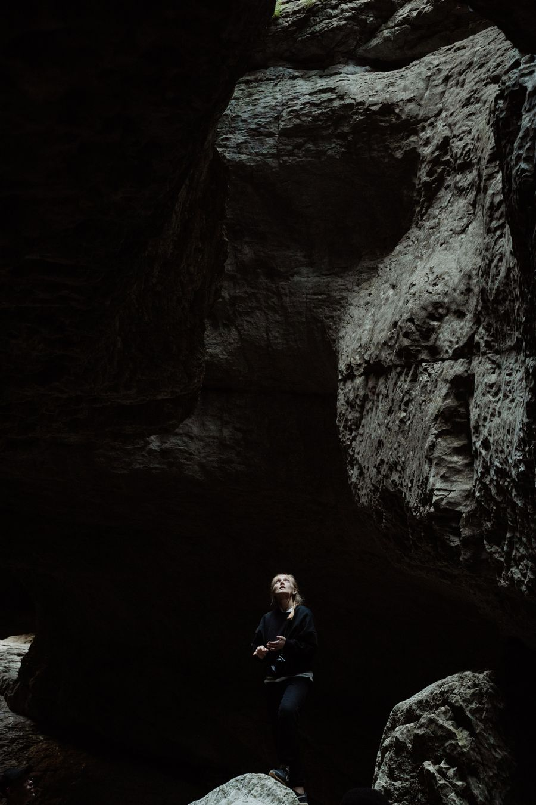
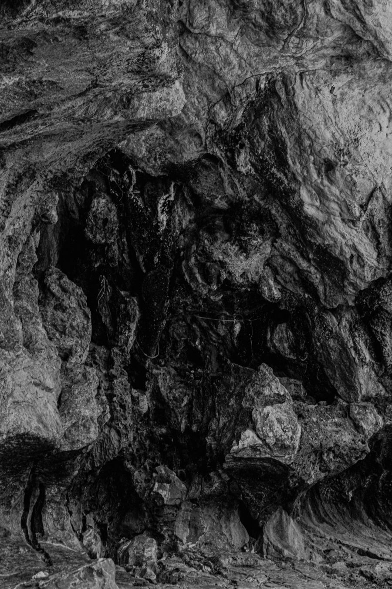

The surveyor
Maren Hartley. Fourteen years underground, all of it written down.
I came to surveying the way most surveyors do: I got tired of other people's maps being wrong in the dark. A geography degree, two seasons as a volunteer on a club resurvey, and then the slow realisation that the book — not the boot, not the rope — is the instrument the whole trip hangs on. Since then: surveyor or survey lead on fourteen systems, from horizontal fossil series you can walk upright to a −412 m vertical system where the book travels in a sealed drum and so, on the bad days, does the surveyor's temper.
I work in a two-person team with the same partner of nine years, because a survey crew that has to negotiate its habits underground is a crew making errors. I teach survey weekends for clubs twice a year — the trade needs more people who can close a loop — and I will happily tell any client exactly which parts of their old survey to trust and which to re-walk. A beautiful map of the wrong cave is still the wrong cave.
The working page
How a survey expedition runs.
Five stations, in the order the work actually happens. Clients are welcome at any of them — several of the best questions I've been asked came from a conservation officer standing at a pitch head with the book open.

-
Entrance & rigging
The entrance is fixed and tied to the surface before anything else — a survey that doesn't know where it starts is fiction. Pitches are rigged for the whole programme, not the day: rope, hangers and rebelays placed so the survey team passes a hundred times, not once.
-
Survey practice
Station to station: tape for distance, compass for bearing, clinometer for gradient, passage dimensions at every station. Legs are read forward and, on grade work, checked back. The book is waterproof because the cave is not, and every page is numbered before it goes underground.
-
Closure, same week
Loops are reduced and closed while the team can still re-walk them — never left to the winter. If a loop miscloses outside grade, the section is re-read until the error is found or the survey's grade is honestly lowered. Both outcomes are publishable; a hidden one is not.
-
Drawing-up
Centreline first, then passage walls around it, plan and elevation together. The grade is stated on the drawing with its closure figures, and unsurveyed leads are drawn as open — a dotted line and a note, never a wall invented to finish the page.
-
Archiving
The client gets the drawing, the report and the reduced data; the original book pages are scanned and lodged with the regional cave registry where the system has one. A survey that only exists in my filing cabinet is a survey that will be done again in thirty years, badly.
Safety & conservation
The cave was there first. We are the visitors with clipboards.
Call-out, always
Every underground day runs on a written call-out: who is in, where, and when overdue becomes a rescue call. No exceptions for short trips, easy caves or good weather — the surface plan is part of the survey fee, not an extra.
Weather is a veto
Flood-prone systems are read off the forecast and the catchment, not off optimism. A survey day lost to water is charged as a surface day; a surveyor lost to water is not a line item anyone wants. The veto is mine and it is final.
Formations are not props
Survey routes through decorated passage are taped and agreed before the work starts, and the team moves inside the tape. A formation that took ten thousand years to grow does not get leaned on for a steadier compass reading.
Cave life keeps its hours
Bat roosts set the calendar: sensitive sections are surveyed out of season or in a single agreed pass. What lives in the cave is recorded in the log with the same care as the passage — it is part of what the survey is for.
The honesty page
What a grade actually claims.
Surveys are graded — in the BCRA scheme, from a rough sketch at Grade 1 up to an instrument survey with closure checks at Grade 5, with a letter for the passage detail. The grade is not a compliment. It is a claim with an error attached, and it should be read like one.
A grade is a claim, not a medal
Grade 5C on one of my drawings means: instruments read to their stated precision, loops closed within the scheme's tolerance, passage detail recorded at the fullest level. If a job only earned 5B, the drawing says 5B. The letter is part of the measurement.
Closure error is printed
Every loop's misclosure appears on the drawing and in the report — in metres, not adjectives. Thirty-one of my thirty-three loops closed within grade. The other two are in the case files, with what was done about them.
Unsurveyed means unsurveyed
Leads we didn't enter are drawn open and labelled. An unexplored passage on a map is a statement — "nobody has been here with a book" — not an invitation and not a promise about what is beyond it.
Old surveys are evidence, not gospel
Some of the finest surveying in the Dales was done with candles and a linen tape, and some of it is wrong in ways only a re-walk finds. I audit old books leg by leg and say which parts stand. Respect for the dead is shown by checking their work, not by framing it.
Engagement terms
Booked the way fieldwork is booked.
A season slot is held on a 25% deposit against the estimated underground days. Expedition work is booked a season ahead; documentation surveys can usually start within a month.
Plan and elevation drawings with grade and closure figures stated, the written report, reduced survey data in an open format, and scanned book pages. Registry deposit included where a registry exists.
Days lost to flooding or unsafe conditions are charged at the surface rate. Rescheduling within the same season carries no fee; the cave sets this term, I just write it down.
The client secures landowner and conservation permissions, or commissions me to liaise at the surface-day rate. No survey starts on a cave we don't have the right to be in.
Invoiced on delivery of the drawing set, 30 days. Stage payments on expeditions over ten underground days.
Method suit your cave?
Tell me the system, the old book if there is one, and what decision the survey has to carry.